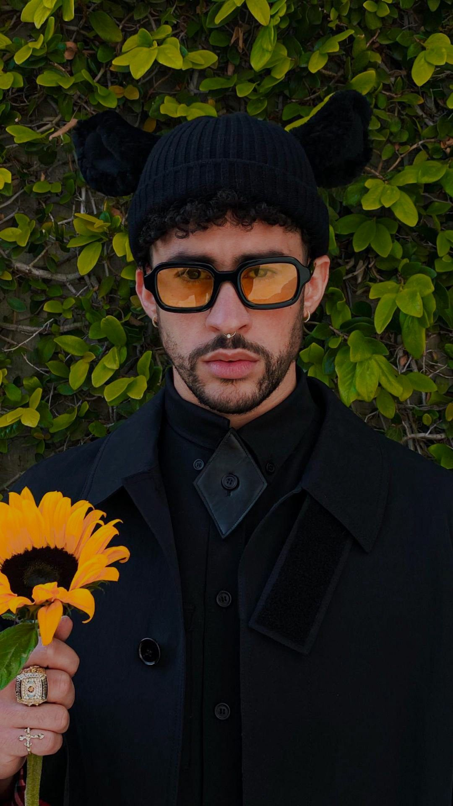

Bad Bunny, cuyo nombre real es Benito Antonio Martínez Ocasio, ha revolucionado el mundo de la música urbana con su estilo único y su enfoque innovador. Desde sus humildes comienzos en Puerto Rico hasta convertirse en uno de los artistas más influyentes del siglo XXI, su trayectoria es un testimonio de talento, perseverancia y autenticidad. Bad Bunny nació el 10 de marzo de 1994 en San Juan, Puerto Rico. Creció en el barrio de Vega Baja, donde desde pequeño mostró un interés profundo por la música. Su influencia musical provino de una mezcla de reguetón, trap y otros géneros latinos que escuchaba en casa. La pasión por la música lo llevó a estudiar comunicación audiovisual en la Universidad de Puerto Rico, aunque su destino estaba claramente en el mundo del entretenimiento.

El viaje musical de Bad Bunny comenzó en 2016 cuando decidió subir sus primeros temas a SoundCloud. Su estilo único, que combina reguetón con trap y otros géneros, pronto captó la atención de los oyentes. Su primer gran éxito llegó en 2017 con la canción "Soy Peor", que lo catapultó a la fama en la escena del reguetón y el trap latino. Bad Bunny no tardó en consolidarse como una figura clave en la música urbana. Su primer álbum, X 100PRE (2018), recibió elogios de la crítica y del público por su originalidad y frescura. A lo largo de los años, ha lanzado álbumes exitosos como YHLQMDLG (2020) y El Último Tour Del Mundo (2020), que han consolidado su estatus como un innovador en la música latina. Su estilo audaz y su actitud desafiante se reflejan tanto en su música como en su imagen. Bad Bunny ha sido conocido por desafiar los estereotipos de género y por su habilidad para mezclar diferentes estilos musicales, desde el reguetón hasta el rock y el trap. Bad Bunny ha roto barreras en la industria musical y ha influido en una nueva generación de artistas. Su impacto no solo se mide en cifras de ventas y streaming, sino también en su capacidad para abrir diálogos sobre temas sociales, como la identidad y la política. Su colaboración con otros artistas internacionales y su participación en eventos globales han ampliado su alcance y han hecho que su música resuene en todo el mundo.
"X 100PRE" es el primer álbum de estudio de Bad Bunny, lanzado el 24 de diciembre de 2018. Incluye éxitos como "Mía" y "Estamos Bien". Este álbum marcó el inicio de una nueva etapa en la carrera de Bad Bunny, destacando su estilo único y su capacidad para fusionar reguetón con otros géneros.
"Oasis" es un álbum colaborativo de Bad Bunny y J Balvin, lanzado el 28 de junio de 2019. Incluye éxitos como "Qué Pretendes" y "La Canción". Este álbum combina el estilo único de ambos artistas, fusionando reguetón con toques innovadores.
"YHLQMDLG" es el segundo álbum de estudio de Bad Bunny, lanzado el 29 de febrero de 2020. Incluye éxitos como "Vete" y "Yo Perreo Sola". Este álbum destaca por su diversidad de estilos y colaboraciones, consolidando a Bad Bunny como uno de los artistas más importantes del reguetón.
"Las Que No Iban a Salir" es un álbum de Bad Bunny lanzado el 10 de noviembre de 2020. Incluye temas inéditos y colaboraciones especiales, destacando el estilo innovador de Bad Bunny y su habilidad para experimentar con diferentes géneros.
"El Último Tour Del Mundo" es el tercer álbum de estudio de Bad Bunny, lanzado el 27 de noviembre de 2020. Este álbum explora nuevos sonidos y temáticas, destacando la evolución artística de Bad Bunny y su capacidad para innovar en el reguetón.
"Un Verano Sin Ti" es el tercer álbum de estudio de Bad Bunny, lanzado el 6 de mayo de 2022. Este álbum ofrece una mezcla vibrante de reguetón, ritmos caribeños y colaboraciones internacionales, reflejando la evolución continua del artista y su habilidad para innovar en la música.
"Nadie Sabe Lo Que Va a Pasar Mañana" es el cuarto álbum de estudio de Bad Bunny, lanzado el 12 de mayo de 2024. Este álbum continúa explorando el estilo único de Bad Bunny, combinando reguetón con nuevas influencias y colaboraciones innovadoras.